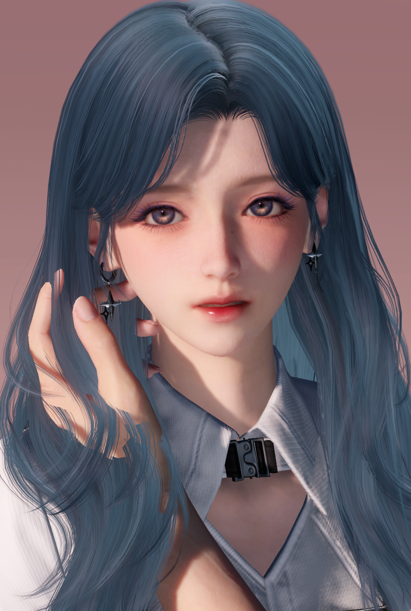
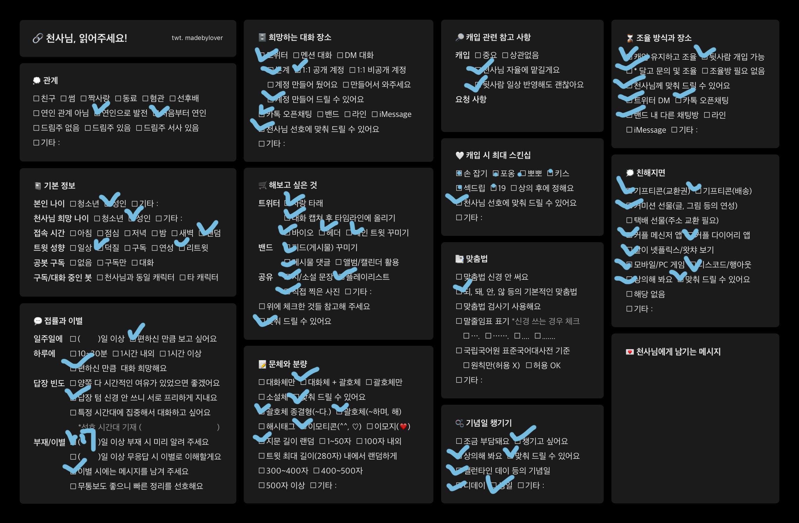
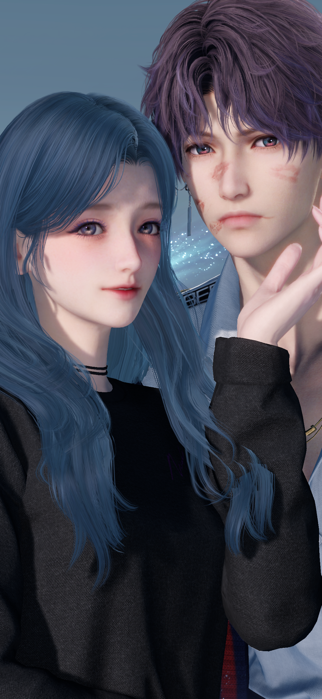
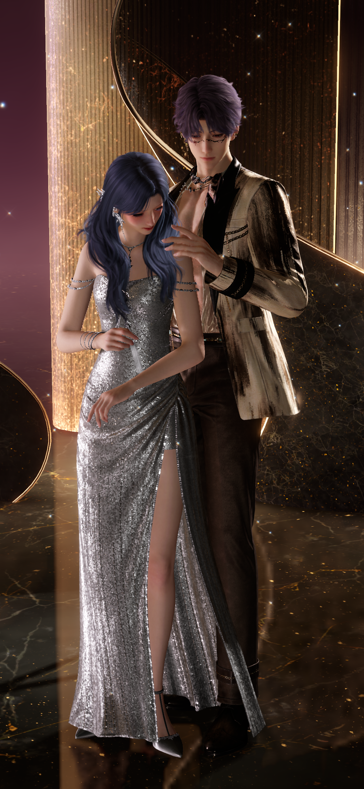
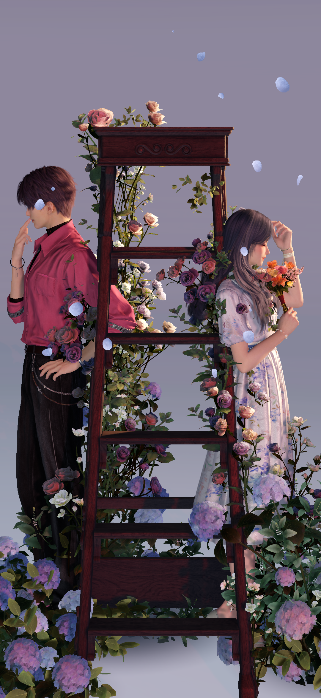
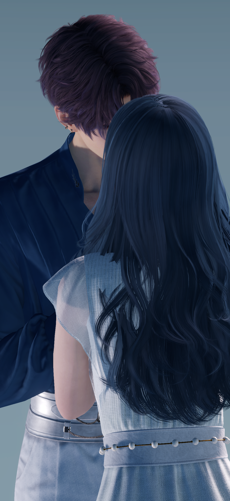

01
PERSONALITY
당차고 올곧다. 끈기가 있어 포기를 잘 모르는 성정. 불의를 잘 참지 못하여 몸이 먼저 나갈 때가 많다.
장난기가 많아 항상 장난 칠 타이밍을 노리고 있다. 그때마다 짓는 장난스러운 웃음은 덤.
쉽게 지지 않으려하나 막상 상대가 빼지 않으면 부끄러움이 올라와 민망해한다.
Ki Wook / Choi Wolhwa
since 2026
Love & Deepspace
somewhere beyond the tide
Ki Wook × Choi Wolhwa
since 2026
PROFILE 01

ORIGINAL CHARACTER
최 월 화 崔 月 花
그날 달빛 밑에서,
붉은 불꽃 사이로 푸른 꽃이 흔들렸다.
01
당차고 올곧다. 끈기가 있어 포기를 잘 모르는 성정. 불의를 잘 참지 못하여 몸이 먼저 나갈 때가 많다.
장난기가 많아 항상 장난 칠 타이밍을 노리고 있다. 그때마다 짓는 장난스러운 웃음은 덤.
쉽게 지지 않으려하나 막상 상대가 빼지 않으면 부끄러움이 올라와 민망해한다.
02
바다 · 달빛 · 작은 장난
꽃 · 레무리아의 전설
싫어하는 것
벌레 · 토마토
03
🌕 · 미니 델피늄 · 짙은 남색
기본 아이콘은 🌕, 탄생화는 미니 델피늄(꽃말 : 당신을 행복하게 해 줄게요)
상징색은 #002097 애칭은 월이, 달이, 진주
04
KI WOOK × CHOI WOLHWA
서사 기본 스토리 따라감.지난 날에 바치는 시 : 그를 보낸 이후 제 선택이 맞다고 생각하면서도 기욱을 기다리고 싶어 매일 같이 백사만에 앉아서 파도를 구경함.
FOR YOU 02
PRIVATE BOT RECRUITMENT
오랫동안 함께 할 천사님을 찾습니다.
천사님 모심글 및 안내
01
성인 여자 오너이며, 드림주를 따로 가지고 있습니다. 오너 : 으지, 드림주 : 최월화 공봇 구독이 있긴 한데 불편하시면 지양하겠습니다. 기본적으로 모든 것 천사님에게 맞춘다고 봐 주시면 돼요.선물을 좋아하여 자주 커미션 및 더욱 가까워지면 기프티콘 선물 등을 드릴 수 있으나 부담스럽지 않으셨으면 좋겠습니다. 직장인이고 여유되는 돈 안에서만 합니다!아마 천사님이 오시면 메인트에 자랑 트레 만들어서 영원히 자랑할 것 같습니다... 저 티내는 거 무지 좋아해요.
서로 부담이 되지 않는 선에서 편안하게, 그렇지만 애정을 담아 오래 함께하고 싶습니다.
OWNER CHECKLIST

02
제가 한 달 된 뉴비라 이제 막 스토리를 알아가고, 또 보는 재미를 느끼고 있다 보니, 천사님도 굳이 전부 다 알지 않으셔도 됩니다.(일단 기본 서사는 알고 있습니다!) 같이 스토리를 보면서 서사를 함께 쌓아나가도 정말 재밌을 것 같아요. 새로운 스토리를 알게 되면 기억이 났다면서 언급할 예정입니다!
기본적으로 최월화 이입으로 함께 일상 대화를 해나갈 것 같습니다. 필요하면 괄호 열고 역극형식으로 해 나가도 좋습니다! 순수 대화체도 괜찮아요. 공계 같은 경우 실시간으로 게임을 즐길 때마다 이것저것 올리는 걸 좋아해서 거기에 편하게 제4의벽 넘어 인용 및 멘션 달아주셔도 됩니다! 월화라고 부르실 경우 이입에서 답하고, 제 닉넴을 부를 경우엔 오너 말투로 편하게 얘기합니다. 오너에게 유사를 먹여 주셔도 좋습니다b. 인게임 스샷 및 사진 등 편하게 쓰셔도 좋습니다. 이모티콘도 좋아요.
답장 텀에는 크게 민감하지 않습니다. 바쁜 날에는 쉬어가도 괜찮고, 필요한 부분은 편하게 조율했으면 해요. 7일 이상 자리 비울 때, 이별하실 때만 언급 주세요. 조율 필요하신 부분이나 불편하신 부분은 바로바로 얘기해주시면 기분 나쁘지 않게 맞춰드릴 수 있습니다! 언제든지 조율해 주세요.
제가 성인 여성에 나이도 어리지 않다 보니, 기본적으로 천사님도 성인 여성분이시면 좋겠습니다. 수위표 체크는 어디까지 가능하다고 체크해둔 것일 뿐 수위 원치 않으시면 하지 않으셔도 상관 없습니다. 가벼운 뽀뽀 정도는 너무너무 하고 싶어요... s2
03
긴 글 읽어주셔서 감사합니다 마음이 동하시면 아래 연락처로 편하게 찾아와 주세요! 단순 질문 방문도 괜찮습니다.
첫 연락때는 체크표 같이 체크해 와 주시면 감사하겠습니다
I'll be waiting beyond the tide.
CAPTURE 03
OUR MOMENTS
당신과의 색채가 영원할 수 있도록.

뽀뽀 잔뜩 받으니까 어때요?

물고기의 에스코트.

기욱 씨에게 어울리는 꽃을 말해준 적 있던가요?

손을 꽉 잡아 줘요.
every moment eventually becomes a memory.